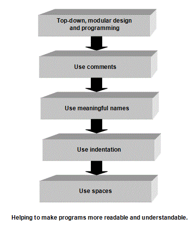

<div id="jsn-maincontent" class="span9 order1 row-fluid">
  <div id="jsn-maincontent_inner">
    <div id="jsn-centercol">
      <div id="jsn-centercol_inner">
        <div id="jsn-mainbody-content" class="jsn-hasmainbody">
          <div id="jsn-mainbody-content-inner1">
            <div id="jsn-mainbody-content-inner2">
              <div id="jsn-mainbody-content-inner3">
                <div id="jsn-mainbody-content-inner4" class="row-fluid">
                  <div id="jsn-mainbody-content-inner" class="span12 order1">
                    <div id="jsn-mainbody">
                      <div id="system-message-container"></div>

                      <div
                        class="item-page"
                        itemscope
                        itemtype="https://schema.org/Article"
                      >
                        <meta itemprop="inLanguage" content="en-GB" />

                        <div itemprop="articleBody">
                          <p></p>
                          <h1
                            class="ContentHeading"
                            style="text-align: center"
                            align="center"
                          >
                            Program-writing techniques, comments and indenting
                          </h1>
                          <p class="NormalContent">
                            <strong class="NormalContentHeading"
                              >Good program design techniques</strong
                            ><br />
                            It is very easy to write code so that it is
                            difficult for anyone to follow or understand! It is
                            also possible, with very little extra effort, to
                            write code that is easy to follow and understand. It
                            is important that code can be understood. There may
                            be a bug in the program. It may be that a program
                            needs to be changed - perhaps extra functions need
                            to be added or the law has changed and something in
                            the program needs to be changed. Whatever the
                            reason, if it is difficult to follow how the code
                            works then it will be difficult to modify it. There
                            are a number of simple things that a programmer can
                            do to ensure that a program's code is 'readable'.
                            These can be summarised as:
                          </p>

                          <ul>
                            <li style="list-style-type: none">
                              <ul style="list-style-type: disc">
                                <li class="NormalContent">
                                  Top-down programming
                                </li>
                                <li class="NormalContent">Comments</li>
                                <li class="NormalContent">Variable names</li>
                                <li class="NormalContent">Indentation</li>
                                <li class="NormalContent">Line spacing</li>
                              </ul>
                            </li>
                          </ul>
                          <p class="NormalContent">
                            <strong class="NormalContentHeading"
                              >Modular programming</strong
                            ><br />
                            Programs should be written in modules. Whatever the
                            language being used, it will be easier to understand
                            a program if it has been broken down into small
                            modules, with each of the modules performing ideally
                            just one task and coded up as a standalone piece of
                            code. The modules are effectively standalone units
                            of code that can, however, interact with other
                            modules of code.&nbsp;
                          </p>
                          <p class="NormalContent">
                            <strong class="NormalContentHeading"
                              >Comments</strong
                            ><br />
                            Code is just that, code. By adding a commentary and
                            explanations throughout a program, it will help
                            someone follow what has been done and how a
                            particular piece of 'clever' code works. Good
                            comments need to be written to aid future
                            maintenance of programs. It is very likely that the
                            programmers who have to make changes in the future
                            to a particular program will be different to the
                            original programmers and will therefore struggle to
                            make changes. Even if they were the same people, it
                            would be very unlikely that they could remember how
                            and why they wrote a particular program in a certain
                            way.
                          </p>
                          <p class="NormalContent">
                            Comments should be so good that if you took away the
                            code and left just the comments, a skilled
                            programmer should be able to reconstruct the code.
                          </p>
                          <p class="NormalContent">
                            <strong class="NormalContentHeading"
                              >Variable names</strong
                            ><br />
                            Variable names should reflect the item of data they
                            hold. If this is done, then a program can be 'read'
                            that bit easier than if meaningless variable names
                            are used. Consider the following programs, program 1
                            and program 2:
                          </p>
                          <p class="NormalContent" align="center">
                            
                          </p>
                          <p class="NormalContent">
                            <strong>
                              I<span class="NormalContentHeading"
                                >ndentation</span
                              ></strong
                            ><br />
                            Programs are rarely written as a list of
                            instructions. Parts of the code are 'indented'
                            (moved in a few spaces) to emphasise that the code
                            belongs to one of the programming constructions
                            'selection' or 'iteration'. Code that is indented in
                            this way is far easier for programmers to read and
                            follow than code written as a list of instructions.
                            Which of these two identical programs is easiest to
                            understand and why?
                          </p>
                          <p class="NormalContent" align="center">
                            
                          </p>
                          <p class="NormalContent">
                            <strong class="NormalContentHeading"
                              >Line spacing</strong
                            ><br />
                            Programs should be spaced out. One endless block of
                            code making up a program is harder to read than a
                            program that has been split up into sections by the
                            liberal use of line spaces. For example, functions
                            and procedures should be clearly separated from each
                            other with line spaces. Variable declarations and
                            the main program should be separated from the
                            functions and procedures with line spaces.
                          </p>
                          <p class="NormalContent">
                            <strong class="NormalContentHeading">Summary</strong
                            ><br />
                            Programming code can be written to aid understanding
                            by using a few simple techniques. These are:
                          </p>
                          <ul>
                            <li style="list-style-type: none">
                              <ul style="list-style-type: disc">
                                <li class="NormalContent">
                                  Employing top-down programming and modular
                                  design.
                                </li>
                                <li class="NormalContent">
                                  Using comments throughout a program.
                                </li>
                                <li class="NormalContent">
                                  Using meaningful variable names.
                                </li>
                                <li class="NormalContent">
                                  Using indentation.
                                </li>
                                <li class="NormalContent">
                                  Using line spaces.
                                </li>
                              </ul>
                            </li>
                          </ul>
                          <p class="NormalContent" align="center">
                            <br /><br />
                          </p>
                          <p></p>
                        </div>
                      </div>
                    </div>
                  </div>
                </div>
              </div>
            </div>
          </div>
        </div>
      </div>
    </div>
  </div>
</div>
